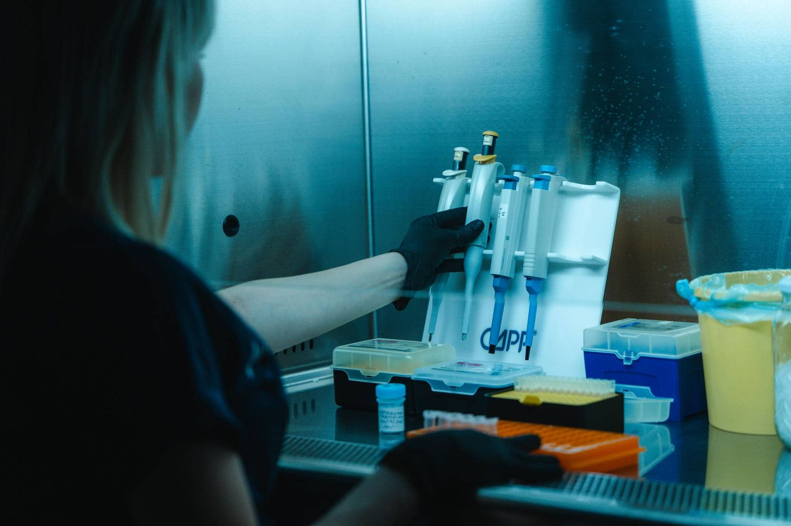

Διασφάλιση ποιότητας
Ποιότητα
& πιστοποιήσεις.
Το εργαστήριο δεσμεύεται να παρέχει υπηρεσίες που πληρούν τα υψηλότερα πρότυπα ποιότητας, σύμφωνα με διεθνείς κανονισμούς και πιστοποιήσεις.
ISO 9001:2015
Το εργαστήριο BIOLAB — Μοριακή Διαγνωστική Ο.Ε. έχει πιστοποιηθεί από την EUROCERT για την εφαρμογή του προτύπου ISO 9001:2015 στο σύστημα διαχείρισης ποιότητας.
ESHG
Μέλος της Ευρωπαϊκής Κοινότητας Γενετικής του Ανθρώπου. Συμμετέχουμε ενεργά στις εξελίξεις της γενετικής και συνεργαζόμαστε με κορυφαίους επιστήμονες στην Ευρώπη.
ESCCA
Μέλος της Κοινότητας Κλινικής Ανάλυσης Κυττάρων. Παρέχουμε προηγμένες υπηρεσίες ανάλυσης κυττάρων, αξιοποιώντας τα τελευταία δεδομένα και εκπαιδεύσεις στον τομέα.
Πολιτική ποιότητας
Η δέσμευσή μας
Πολιτική για την ποιότητα του εργαστηρίου BIOLAB — Μοριακή Διαγνωστική Ο.Ε. αποτελεί η λειτουργία του και η παροχή αξιόπιστων, ανεξάρτητων, αμερόληπτων και υψηλού κύρους υπηρεσιών εργαστηριακών εξετάσεων επί κατάλληλων κατά περίπτωση βιολογικών δειγμάτων ανθρώπινης προέλευσης, ώστε να τεκμηριώνεται αναμφισβήτητα η συμμόρφωσή τους με τις απαιτήσεις των πελατών, της νομοθεσίας, των κριτηρίων διαπίστευσης και του προτύπου ISO 9001:2015.
Το πεδίο εφαρμογής είναι η παροχή μοριακών διαγνωστικών εξετάσεων με χρήση πιστοποιημένου εξοπλισμού και πιστοποιημένων αντιδραστηρίων CE IVD. Οι εξετάσεις που πραγματοποιούνται περιλαμβάνονται στις υποκατηγορίες: γενετικός έλεγχος και γενετικά νοσήματα, γενετικός έλεγχος υπογονιμότητας, αιματολογία και ογκολογία, μοριακή ογκολογία, μοριακή μικροβιολογία, υγεία και διατροφή.
Δέσμευση της Διοίκησης
Η Διοίκηση δεσμεύεται να προσδιορίζει τις συνθήκες και τις προϋποθέσεις που κρίνονται απαραίτητες ώστε η λειτουργία του εργαστηρίου να παραμένει ανταγωνιστική, χωρίς καμία μείωση στα κριτήρια και τις απαιτήσεις της πιστοποίησης, και να λαμβάνει κάθε αναγκαίο μέτρο για τη διαρκή βελτίωση των παρεχόμενων υπηρεσιών και της αποτελεσματικότητας του Συστήματος Διαχείρισης Ποιότητας.
Στο πλαίσιο αυτής της δέσμευσης εντάσσονται:
- Η στελέχωση με έμπειρο, κατάλληλα καταρτισμένο και διαρκώς επιμορφούμενο προσωπικό
- Η χρήση σύγχρονων και αξιόπιστων εργαστηριακών οργάνων, συστημάτων και εγκαταστάσεων
- Η υλοποίηση λεπτομερών και σαφών διαδικασιών σε κάθε στάδιο της ανάλυσης
- Η διασφάλιση της συνεχούς ροής των αναγκαίων πόρων
Αρχές λειτουργίας
Το εργαστήριο υιοθετεί πλήρως τις αρχές της ανεξαρτησίας, της αμεροληψίας, της ακεραιότητας, της εμπιστευτικότητας και της ισότιμης μεταχείρισης των πελατών, απαλλαγμένο από επιρροές και διακρίσεις, σε πνεύμα αμοιβαίου σεβασμού και με υψηλό αίσθημα επαγγελματικής ευθύνης.
Το εξουσιοδοτημένο προσωπικό και η Διοίκηση φέρουν την ευθύνη για την άρτια και τεχνικά επαρκή εκτέλεση των εξετάσεων, με σεβασμό στα δικαιώματα και τις ανάγκες του εξεταζομένου και με γνώμονα την προστασία των προσωπικών του δεδομένων. Παράλληλα, το εργαστήριο μεριμνά για την υγιεινή και την ασφάλεια των εργαζομένων, για την αντιμετώπιση εκτάκτων συμβάντων και για την ασφαλή και σύννομη διαχείριση των αποβλήτων που παράγει.
Συνεχής βελτίωση
Η συνολική λειτουργία του εργαστηρίου βασίζεται στην πιστή εφαρμογή των διαδικασιών του Συστήματος Διαχείρισης Ποιότητας. Η Διοίκηση βρίσκεται διαρκώς σε εγρήγορση ώστε να εντοπίζει τις μεταβολές στο κανονιστικό και τυποποιητικό πλαίσιο και να λαμβάνει τις απαιτούμενες αποφάσεις για τη διατήρηση της αποτελεσματικότητας του συστήματος.
Η Γενική Διευθύντρια του Εργαστηρίου — Ταουσάνη Μαρία

Επικοινωνία
Θέλετε να μάθετε περισσότερα;
Επικοινωνήστε μαζί μας για το σύστημα ποιότητας, τις πιστοποιήσεις ή τις διαδικασίες του εργαστηρίου.